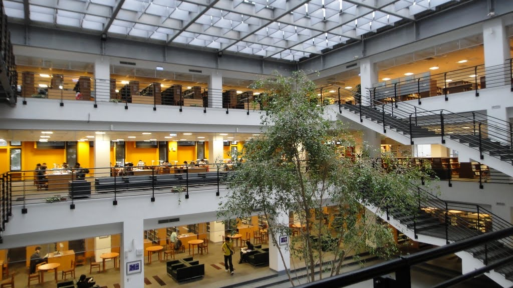

Support for every part of your journey
Plan your studies, take part in campus life and prepare for what comes next. Find the IBSC information you need in one place.

Everything in one place
Curriculum and course map
IBSC connects strategic communication, practical English, design and digital media. Follow the learning pathway and explore selected published courses.
An interdisciplinary education
Students learn across social and policy sciences, Chinese language and literature, applied foreign languages, art and design, and business management. English is the shared language of teaching, discussion and presentation.
The program develops problem-solving, multicultural teamwork and the practical use of English. AI and multimedia coursework complements a foundation in public relations and strategic communication.
Your learning pathway
The first two years establish communication, writing, presentation and digital foundations. In the later years, students build on those foundations through advanced study, electives, internships and opportunities abroad.
IBSC’s published course map is based on the 2025 academic year and covers professional courses. The complete required and elective list is published separately for each entry year; university-wide requirements also apply.
- Build a foundation: practical English, communication, design and digital applications.
- Develop your interests: advanced communication and persuasion, public relations and interdisciplinary electives.
- Put learning into practice: internships, projects and overseas opportunities.
Selected published courses
These examples show the range of IBSC study. Availability and requirements should be checked against the course list for your entry year.
- IH118 / IH119 — Academic English: Writing I / II
- IH121 — Academic English: Listening and Speaking
- IH117 — English Presentation Skills
- IH125 — Reading and Discussion
- IH105 — Intercultural Communication
- IH206 — Principles of Persuasion
- IH249 — Technical Communication
- IH301 — Seminar in Public Relations and Strategic Communication
- IH107 / IH108 — Introduction to Art and Design I / II
- IH209 / IH210 — Introduction to Computer Graphics in Design I / II
- IH248 — Multimedia Content Management and Creation with AI
- IH233 — Introduction to Marketing
- IH333 — Introduction to MICE Industry
Make a plan that fits
Discuss course choices, academic requirements and the timing of an internship or exchange with the program office. Keep a copy of the complete requirements for your entry year when reviewing your progress.
IBSC Student Association
Meet peers, develop leadership skills and help shape campus life. The Student Association brings the IBSC community together through shared experiences.
Connect, contribute and grow
The association offers opportunities to take part in events, workshops and networking. It is a place to build friendships and contribute your voice to student life.
- Connect with classmates across cultures.
- Take part in events and student activities.
- Develop leadership and collaboration through participation.
Student life in action
The program shares stories of cultural exchange, student gatherings and service. Explore these moments to see how communication continues beyond the classroom.
Find your way to take part
Look through the program’s event news and ask the IBSC office how to reach current student representatives. Bring your interests, ideas and skills to the conversation.
Global opportunities
Study abroad offers a different classroom, a new cultural perspective and a chance to put communication into practice. Start by understanding how an exchange works.
What an exchange involves
University exchange programs offer short-term, non-degree study through agreements with partner institutions. Students first complete YZU’s selection process for nomination; the host university then reviews the application.
The university’s outgoing exchange guidance includes undergraduates from the second year onward. Department-managed programs can have separate selection arrangements.
Prepare your application
- Review host options and the courses available for your field.
- Prepare the exchange application, a Chinese transcript with ranking, an English transcript and language proficiency evidence.
- Follow the selection instructions and the host university’s own requirements.
- Discuss course recognition with the program before finalizing your study plan.
From nomination to departure
After host acceptance, arrange the required visa, insurance and accommodation, and complete YZU’s approval steps. Wait for official acceptance before purchasing flights. Application schedules and documents vary between hosts.
Other international experiences
IBSC also describes short-term overseas experiences and cultural exchanges. Ask the program office about opportunities currently available and how they fit your academic plan.
Service learning
Service learning connects participation with reflection. Understand the hours, activity process and service log before you begin.
Understand the requirement
YZU describes service learning as a required one-credit undergraduate course. Before graduation, students complete 18 course hours and 18 activity hours.
- Course hours can be earned by passing departmental or general education service learning courses.
- Eligible campus activities may award course or activity hours, depending on their nature.
- Off-campus activities follow a separate approval and recognition process.
From activity to approved hours
- Find eligible activities in the university portal’s Activity Search or in university email announcements.
- Register for the activity and pre-select it under Service Learning in the portal.
- Attend the activity and sign in personally.
- Complete the service log and submit it for review.
Write and submit your reflection
IBSC’s guidance calls for submitting the log within one week after an event, excluding the event day. The log must be complete and at least 150 words. Missing a personal sign-in or submitting an incomplete or shorter log can result in rejection.
Check your portal for the approval result. If an activity or record needs clarification, contact the organizing unit or the Student Affairs Office.
Scholarships and financial support
Explore the types of support described by IBSC and YZU. Your applicant category, entry year and the current award announcement determine the relevant rules.
Types of support
IBSC lists assistance for academic achievement, financial need, living expenses and unexpected hardship, together with awards for achievement in service, activities, talents and sports. External scholarships and grants are also listed.
- Merit awards recognize academic performance.
- Need-based and living assistance support students facing financial difficulty.
- Emergency assistance addresses sudden hardship.
- Activity and achievement awards recognize contributions beyond coursework.
- External awards have their own eligibility and application requirements.
International and overseas compatriot students
For students entering from fall 2025, YZU’s published rules describe reimbursement categories of 20%, 50% and 100% of eligible tuition, miscellaneous and credit fees. Other charges, including accommodation, insurance and specified facility fees, are excluded.
Awards require review. Students must complete registration and pay the semester’s tuition and fees before scholarship disbursement.
Understand renewal conditions
The published undergraduate renewal criteria include completing a semester, taking the university’s minimum required credits, a conduct score of at least 80 and an average academic grade of at least 75. Departmental ranking is used for the 100% and 50% categories. Meeting a threshold does not itself confirm an award.
The rules distinguish new and current students and may differ by entry year. Check the award notice that applies to your own status.
Prepare for an application
The Student Affairs Office handles general scholarship questions. The Global Affairs Office publishes international and overseas compatriot award guidance.
- Identify the scholarship category and the announcement for your status.
- Check the application period and required evidence.
- Prepare academic or financial documents specified by that award.
- Submit through the named university unit and follow its review instructions.
Careers and further study
Communication skills travel across industries. Use your IBSC studies to explore the kinds of work, questions and professional environments that interest you.
Explore your direction
IBSC emphasizes public relations, strategic communication and cross-cultural communication. Its courses also connect to marketing, digital content, design and the meetings, incentives, conferences and exhibitions industry.
Consider how your strengths in writing, presentation, audience understanding and teamwork could contribute to different organizations.
- Public relations and organizational communication
- Marketing and audience-focused communication
- Content, visual expression and digital media
- Events and cross-cultural coordination
Connect study with professional experience
The program describes company connections and internship experiences as ways to prepare students for professional life. An internship can help you connect course learning with workplace practice.
Continue your learning
IBSC describes further study in communication, languages, social and political sciences, economics, culture and management in Taiwan and abroad. Published graduate examples include study at Yuan Ze University, National Tsing Hua University and the University of Edinburgh.
Compare programs around your interests and prepare the documents each institution requests. Program choices and admission requirements differ.
Build a practical next step
- Keep examples of writing, presentations and creative projects.
- Reflect on what you contributed and what you learned.
- Explore organizations or postgraduate programs that match your interests.
- Discuss your goals with faculty and the program office.
Internships
Connect what you study with the work of an organization. An internship is an opportunity to explore professional interests and develop through experience.
Learning beyond the classroom
IBSC describes working with companies to support students’ preparation for professional life. Its internship archive records experiences completed by earlier student groups.
The curriculum includes internship opportunities in the later years of study, alongside electives and overseas learning. Available placements and academic arrangements should be discussed with the program.
Prepare for a conversation
Begin by identifying what you want to learn. Use the questions below when discussing an opportunity with the program office or a prospective host.
- What work would I do, and which skills would I develop?
- What are the dates, working arrangements and expected responsibilities?
- Who would supervise me, and how would feedback be provided?
- Does the experience have an academic assessment or credit arrangement?
- What documents does the host require from applicants?
Make your learning visible
Keep a record of the projects, responsibilities and skills you develop, respecting the host’s confidentiality and permission requirements. Reflection can help you explain your contribution when preparing future applications.
Talk with the program
Contact the IBSC office to ask about current internship information, academic planning and the appropriate staff contact. Office: Building 7, Room R70201. Email: mina0419509@saturn.yzu.edu.tw. Phone: +886 3 463 8800, extension 2732.
Start with the program office
The IBSC office is in Building 7, Room R70201, on the second floor. Program secretary Shih Ching Fang can help you find the right contact for a program question.
- Email: mina0419509@saturn.yzu.edu.tw
- Telephone: +886 3 463 8800, extension 2732